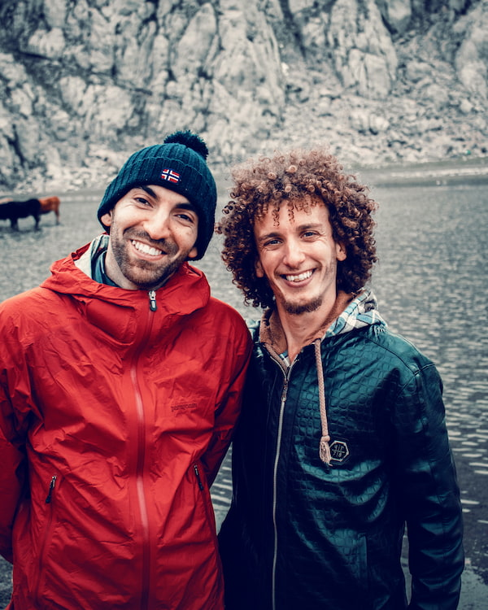

The Raft Project

At The Raft Project, we believe the best river adventures balance
safety, excitement, and unforgettable moments.
Whether you’re brand new to rafting or chasing your next thrill,
our experienced guides are here to support you every paddle stroke
of the way. Our goal is simple: help every guest leave the river
smiling, confident, and already planning their next trip.
History
The Raft Project began with a shared love of the river and a vision
to create outdoor experiences that bring people together. What started
as small group trips with friends quickly grew as word spread about
the welcoming atmosphere, skilled guides, and unforgettable runs.

Today, The Raft Project continues to build on that foundation,
offering professionally guided trips designed for families,
adventurers, and anyone ready to experience the river in a fun,
safe, and memorable way.